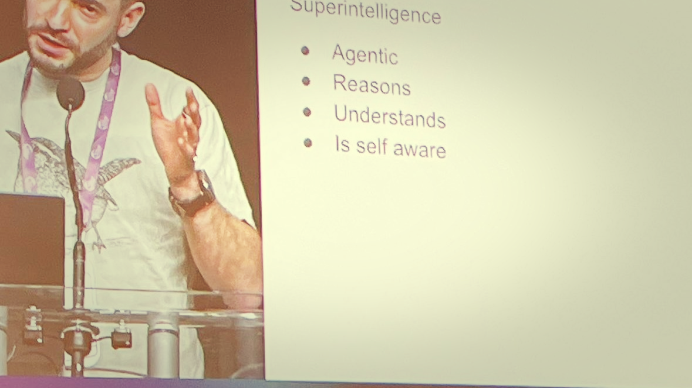
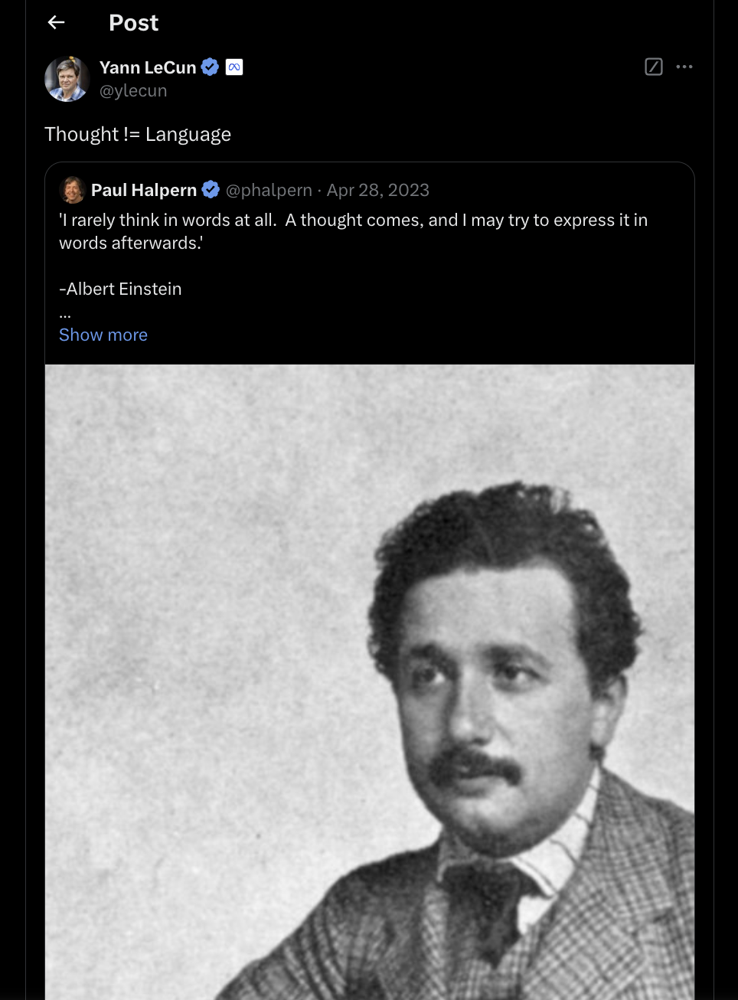
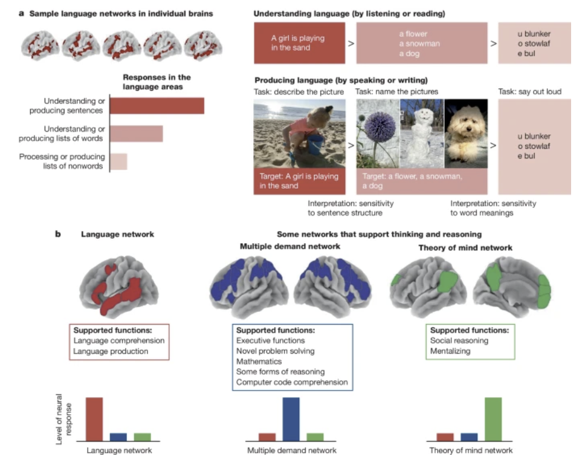
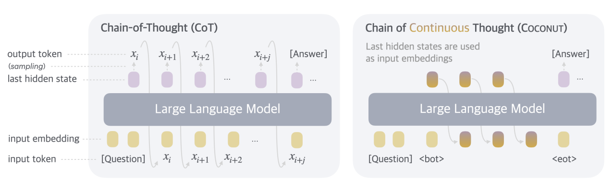
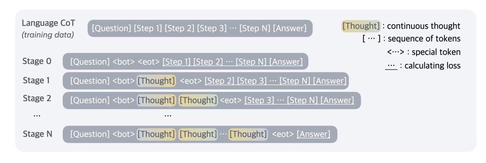
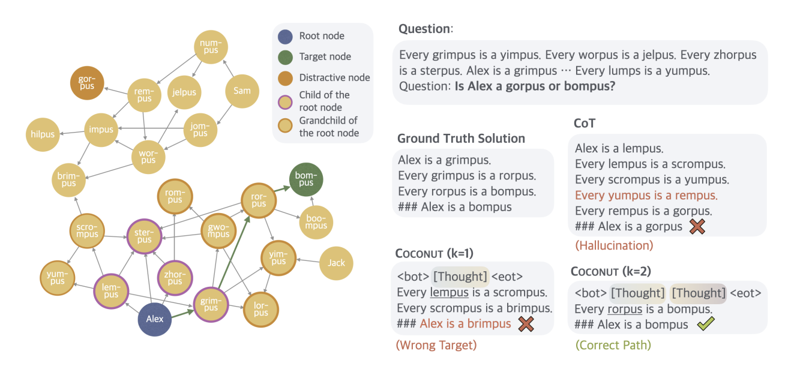

Training Large Language Models to Reason in a Continuous Latent Space
Making LLMs better at reasoning
A lot of research currently goes into making LLMs better at reasoning. Much of this is linked to the fact that current systems “think” with the “same intensity” for every token they produce. Many think that systems would be better if models could “think harder” for harder tasks.

Chain of Thought (CoT)
Chain of thought prompting is a surprisingly simple method that has shown to improve the performance of LLMs on various benchmarks. Effectively, Wei (Wei et al. 2022) showed in their paper (almost 10k citations) that thought demonstrations improve performance.
Kojima (around 3.5k citations) (Kojima et al. 2022) showed that simply adding “Let’s think step by step” into the prompt can yield comparable performance boosts.
Various CoT variants have been proposed. I think Lilian Weng’s take that many of those things should be blog posts and not papers is true.
Some useful variants are shown in (Fu et al. 2023). The paper also shows some of the prompt sensitivity (e.g., changing Q: to Question: or using \n instead of . to separate steps.)
Some follow up work as been discussing that one explanation for the improved performance via CoT reasoning is that the effective compute increases.
CoT can also be thought of as one flavor of test-time compute. This is currently one of the most promising and active streams of research to increase the performance of LLMs. Models like o1 (Qin et al. 2024) heavily lean on utilizing test-time compute (i.e. “thinking” more inference time - ideally, making the amount of thinking proportional to the difficulty of the question).
Internalized CoT
Since generating extra tokens for reasoning in inference time is expensive, researchers attempted to internalize the reasoning pathway.
To converge training, the authors found that it is important to reset optimizer state. Optimizers such as AdamwW keep running averages - and those cause problems when the loss function suddenly changes.
CoT traces are not faithful and might be limiting

It is well known, that CoT traces are not faithful., Turpin showed this by adding biases into the prompt. Those biases led to drops in model performance but were not mentioned by the model. This experiments directly allows to conclude that the verbalized explanations are not faithful as a reason for change in predictions is not verbalized.
Some anthropomorphize this by linking this to neuroscience results that show that “Language is primarily a tool for communication rather than thought” (Fedorenko, Piantadosi, and Gibson 2024)

In addition, it is notable that CoT restricts models to one discrete reasoning path. However, it might be effective to explore multiple paths. A relevant work that does this is Tree of Thoughts (ToT) (Yao et al. 2023). ToT works by creating a branching structure of multiple potential solutions:
- Similar to CoT it breaks down problems into sequential thought steps
- But it generates multiple alternative thoughts at each step
- This can be used to create a tree-like structure of reasoning paths
- These trees can be explored using either:
- Breadth-first search (BFS)
- Depth-first search (DFS)
- Each node (state) can be evaluated using a classifier or majority vote
Methods
The key idea presented in the paper is to not verbalize “thoughts” as language tokens but instead use the hidden representations that the model produces as richer “thought vectors” that could, in principle, also encode multiple reasoning pathways at the same time.

That is, the approach continues to “think” in its internal representation but only verbalized the final answer.
Training approach
To train this model, the authors use a protocol that is inspired by the one utilized for internalized CoT: Over multiple steps, they replace verbalized thinking steps with latent ones.

Results
In their benchmarks, the authors observed promising results for their approach. They showed that their approached outperforms other “internalized thought” techniques.
| Method | GSM8k | ProntoQA | ProsQA | |||
|---|---|---|---|---|---|---|
| Acc. (%) | # Tokens | Acc. (%) | # Tokens | Acc. (%) | # Tokens | |
| CoT | \(42.9 \pm 0.2\) | 25.0 | \(98.8 \pm 0.8\) | 92.5 | \(77.5 \pm 1.9\) | 49.4 |
| No-CoT | \(16.5 \pm 0.5\) | 2.2 | \(93.8 \pm 0.7\) | 3.0 | \(76.7 \pm 1.0\) | 8.2 |
| iCoT | \(30.0^*\) | 2.2 | \(99.8 \pm 0.3\) | 3.0 | \(98.2 \pm 0.3\) | 8.2 |
| Pause Token | \(16.4 \pm 1.8\) | 2.2 | \(77.7 \pm 21.0\) | 3.0 | \(75.9 \pm 0.7\) | 8.2 |
| Coconut (Ours) | \(34.1 \pm 1.5\) | 8.2 | \(99.8 \pm 0.2\) | 9.0 | \(97.0 \pm 0.3\) | 14.2 |
| - w/o curriculum | \(14.4 \pm 0.8\) | 8.2 | \(52.4 \pm 0.4\) | 9.0 | \(76.1 \pm 0.2\) | 14.2 |
| - w/o thought | \(21.6 \pm 0.5\) | 2.3 | \(99.9 \pm 0.1\) | 3.0 | \(95.5 \pm 1.1\) | 8.2 |
| - pause as thought | \(24.1 \pm 0.7\) | 2.2 | \(100.0 \pm 0.1\) | 3.0 | \(96.6 \pm 0.8\) | 8.2 |
They also found that increasing the number of latent thoughts per thinking step increases performance.
By decoding the hidden thoughts they could assign probabilities to different options that COCONUT “explored”. This can be used to construct search trees.

The trees are a bit more “anecdotal” (as there are no systematic statistics) but an interesting perspective on the results
Conclusions
- The current protocol is computationally expensive in training (requires multiple forward passes). If one would like to do this on scale, development of suitable infrastructure is needed.
- It is nice to explore some new paradigms (with smaller models)
- Some of this also links to agents (instead of letting them talk via text we could also used hidden representation)